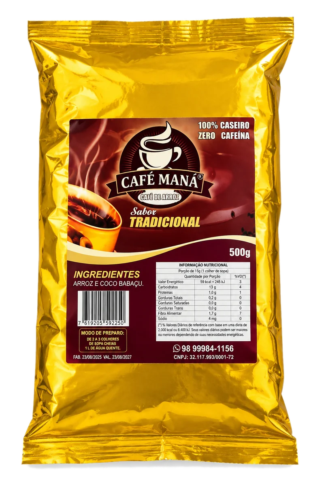
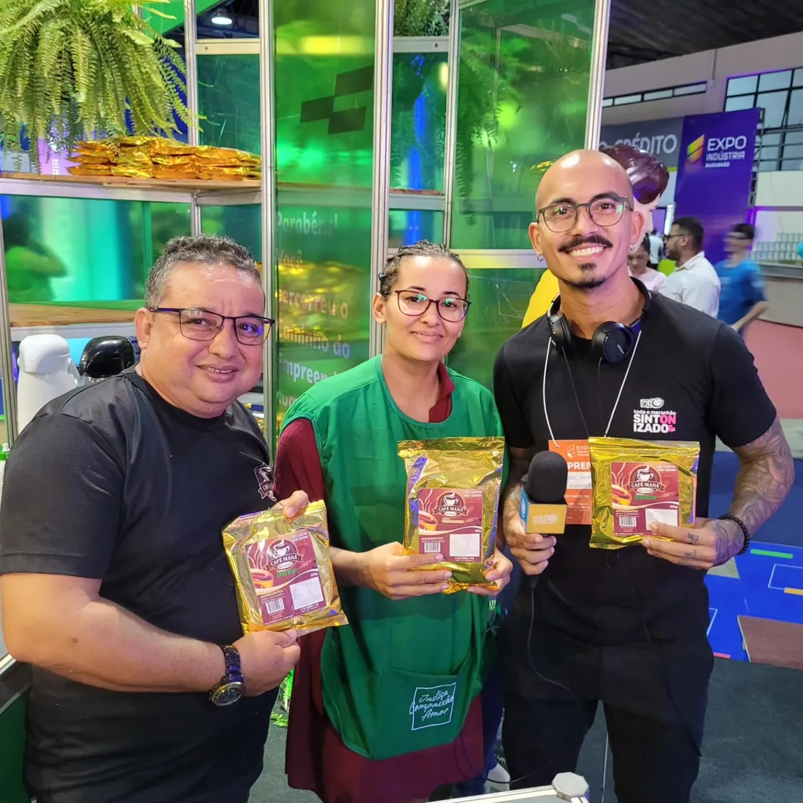
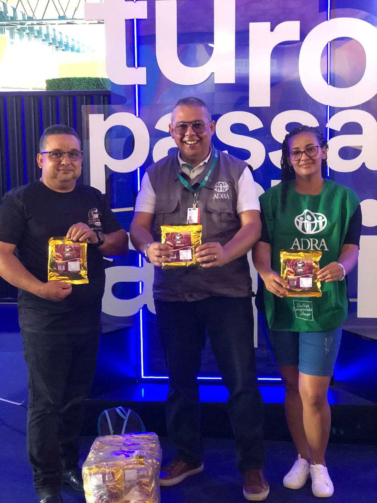
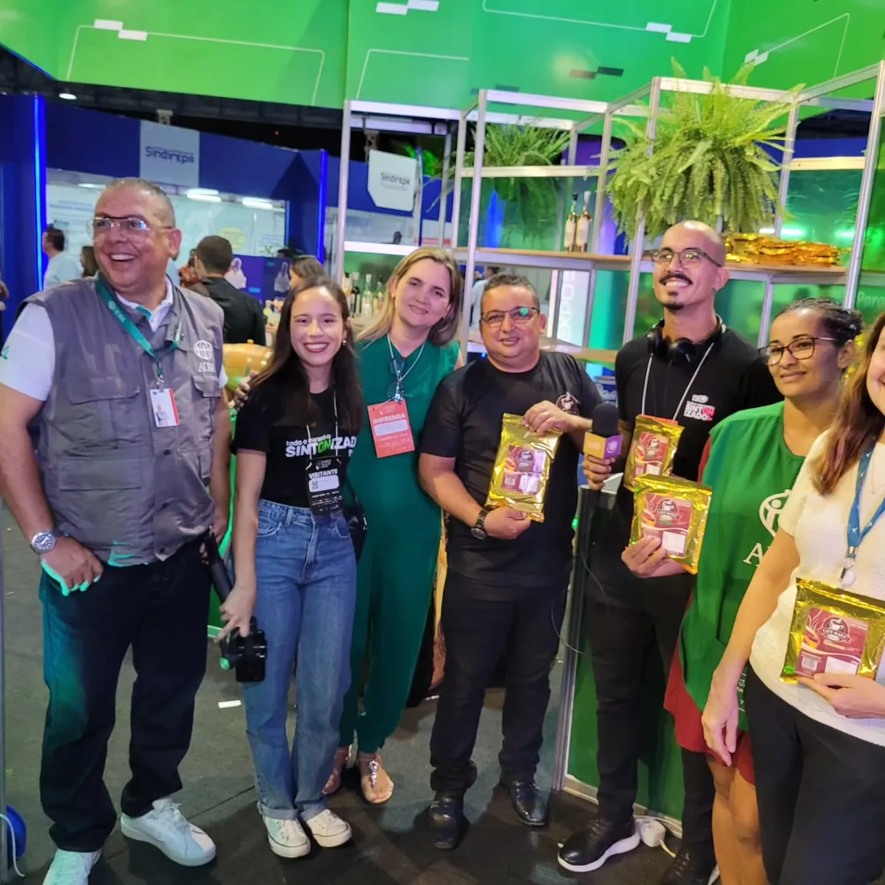
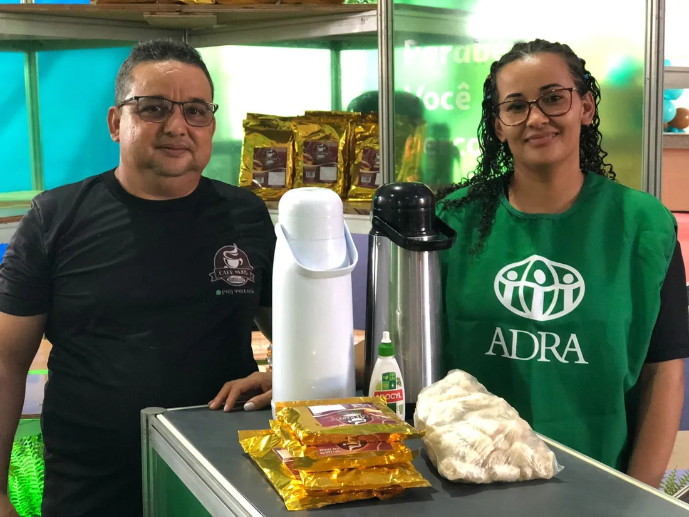
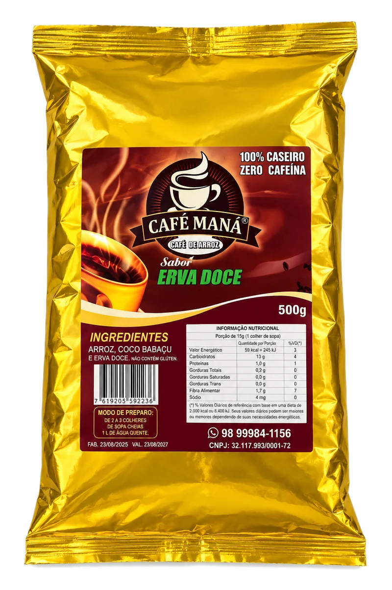

Café Maná é uma bebida de arroz e coco babaçu, torrada e moída em pequenos lotes em São Benedito (MA) — o aroma e o ritual do café tradicional, sem nenhuma cafeína. Dois sabores, validade de 1 ano, pronto para revenda a partir de R$19 a unidade.

Parceria ADRAEm setembro de 2026, o Café Maná esteve na Expo Indústria Maranhão, com cobertura de imprensa e parceria com a ADRA no estande. Prova de que o produto já circula fora da mesa de casa.




O Café Maná nasceu em São Benedito, povoado do município de Tutóia (MA). Por muitos anos, a bebida foi preparada nas casas das famílias da comunidade — sobretudo por quem não tomava café tradicional. Com o tempo, veio a ideia de levar essa tradição a mais gente, mantendo a essência: ingredientes simples, torra, moagem e cuidado no preparo, sem conservantes ou aditivos industriais.
O coco babaçu usado na produção é comprado de quebradeiras de coco do Maranhão e do Piauí, valorizando o trabalho dessas comunidades.
Arroz e coco babaçu
Sabor suave, levemente amargo e adocicado, com notas de arroz torrado e um toque de coco babaçu — aroma tostado que lembra o café tradicional, com personalidade própria.

Arroz, coco babaçu e erva doce
A mesma base do Café Maná, com a adição de erva-doce, que traz seu aroma e sabor característicos à bebida.
Sem adição de açúcar, corantes, aromatizantes ou outros ingredientes — em ambos os sabores.
| Componente | Tradicional | Erva Doce |
|---|---|---|
| Valor energético | 59 kcal (245 kJ) | 59 kcal (245 kJ) |
| Carboidratos | 10 g | 13 g |
| Proteínas | 1,0 g | 1,0 g |
| Fibra alimentar | 1,7 g | 1,7 g |
| Sódio | 4 mg | 4 mg |
Ferva 1 litro de água.
Adicione de 2 a 3 colheres de sopa cheias de Café Maná e deixe ferver por mais alguns instantes.
Coe em um coador de pano ou filtro de papel.
Sirva quente — ajuste a quantidade de pó para uma bebida mais suave ou mais intensa.
| Custo de aquisição | Preço sugerido de venda | Margem bruta |
|---|---|---|
| R$ 19,00 | R$ 29,90 a R$ 34,90 | ≈ 57% a 84% |